2015
A Facebook friend
One ordinary connection became the beginning of something neither of us could have predicted.
18 · 09 · 2026
for the man who became my home
30 years of you.
10 years of friendship.
One forever to discover.
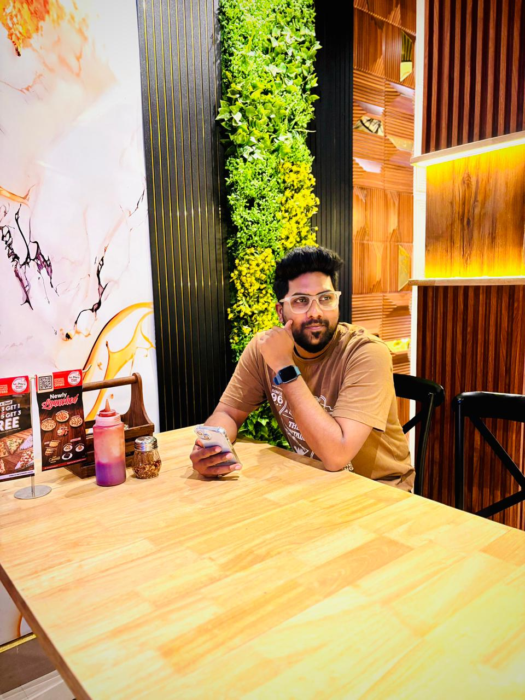
Dear Tarun,
Some people enter our lives with a grand story already written.
Ours didn't.
Around 2015, two people met on Facebook. You seemed like a very serious-going person. I had no idea that the same person could actually be this jolly. ❤️
Then came years of daily conversations, a couple of quiet years when we didn't speak, and somehow — almost ten years later — life brought us back to each other.
Not through a love story anyone had planned. Through our families. Through an arranged marriage.
And now, five months later, I get to call my old friend my husband.
Maybe that is what makes our story ours.
Love,
Somiya ♥
We didn't fall in love first. We became friends first.
One ordinary connection became the beginning of something neither of us could have predicted.
Friendship became part of everyday life. We talked, laughed, and simply stayed in each other's world.
For two years, we were still friends — but we didn't speak. Life had its own timing.
Our families arranged our marriage. The friend I had known for years suddenly became the person I would share my life with.
And somehow, the most unexpected chapter became the one I am most grateful for.
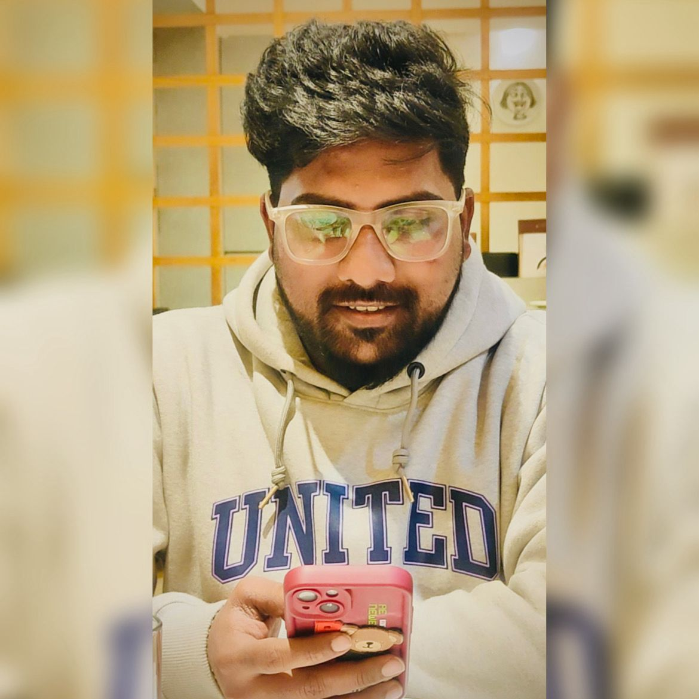
the serious-looking friendFor years I thought you were the serious-going one.
Five months of marriage later, I have officially discovered the jolly version of you.
And already, you have changed the way my days feel.
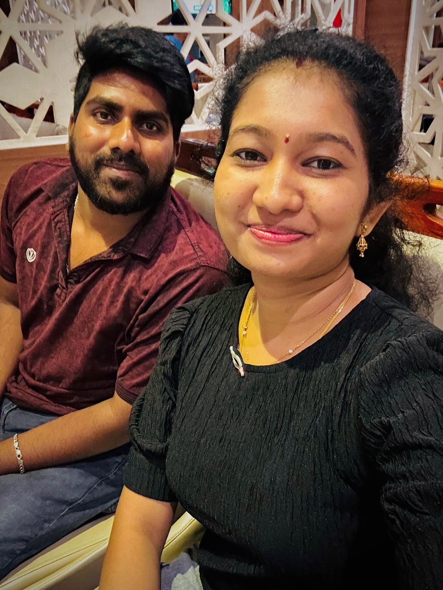
Thank you, Tarun.
Thank you for taking my messy life and making it more planned, more comfortable, more peaceful and so much easier to live.
Thank you for taking responsibilities onto your shoulders and making me feel that I don't have to carry everything alone.
We may have only been husband and wife for five months, but I already know this:
“Life feels a little easier when you're beside me.”
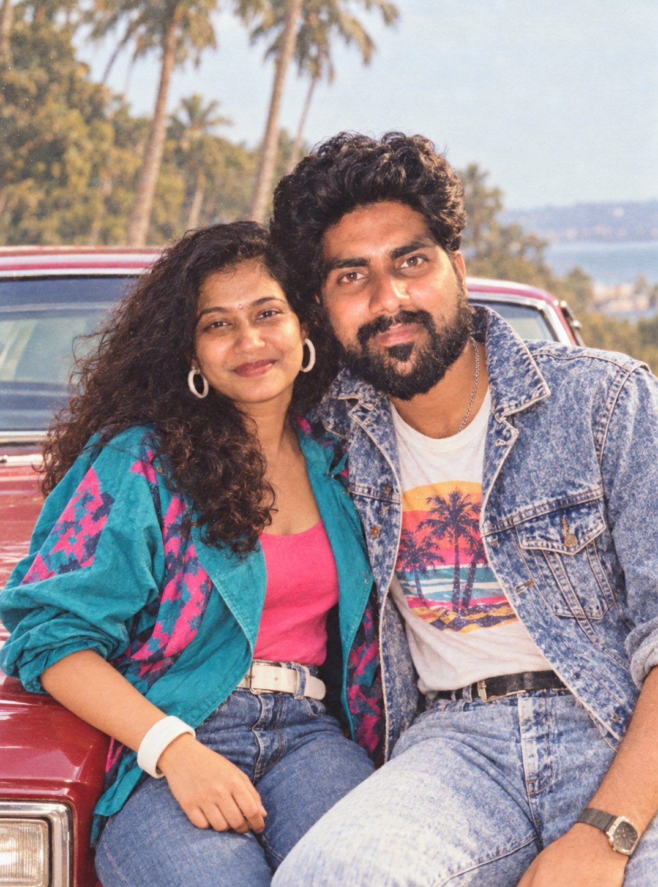
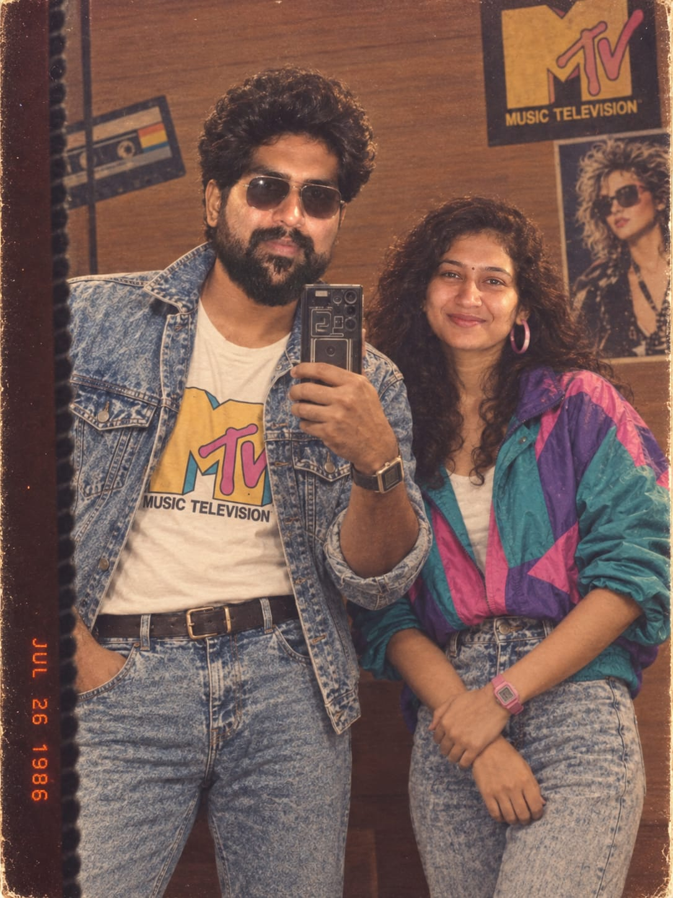
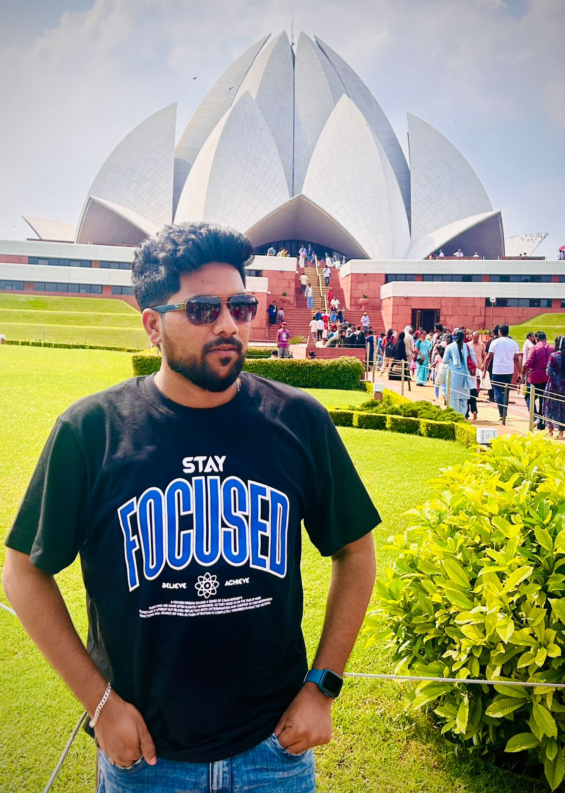
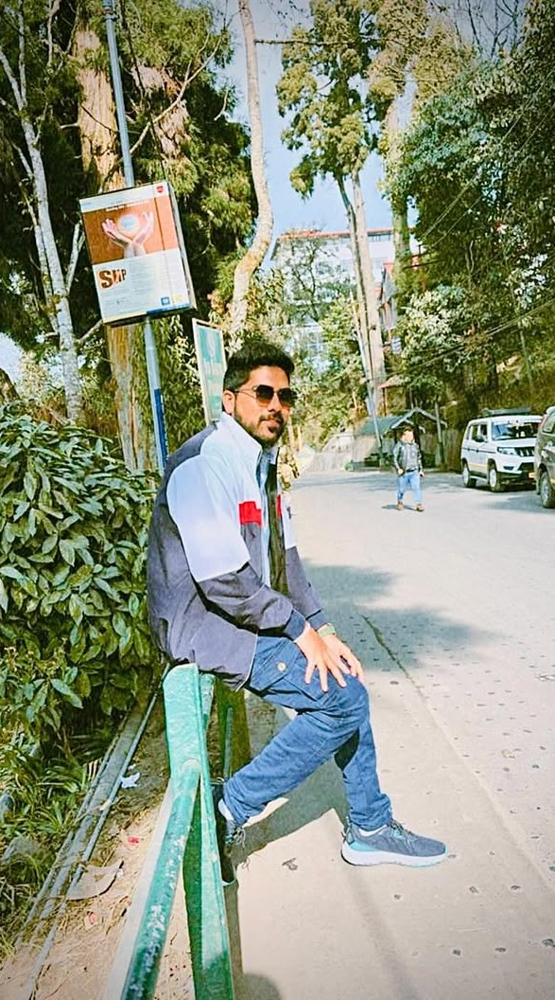
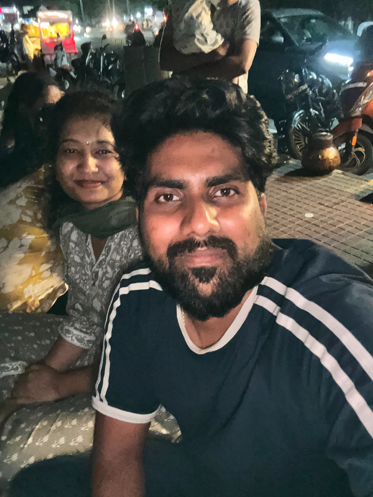
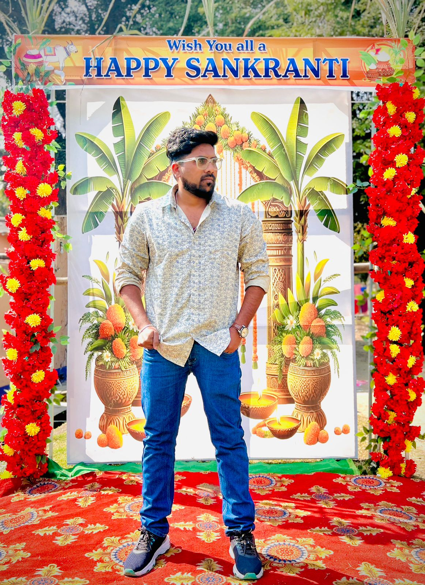
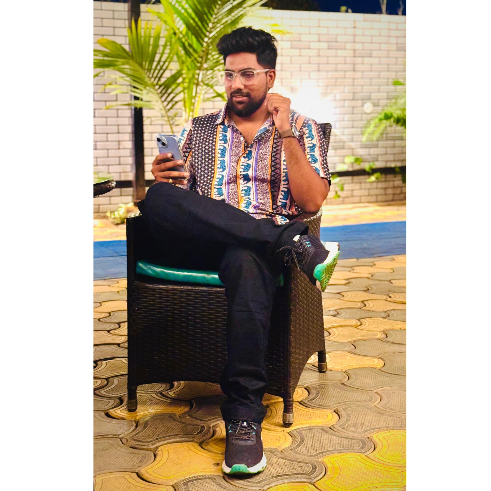
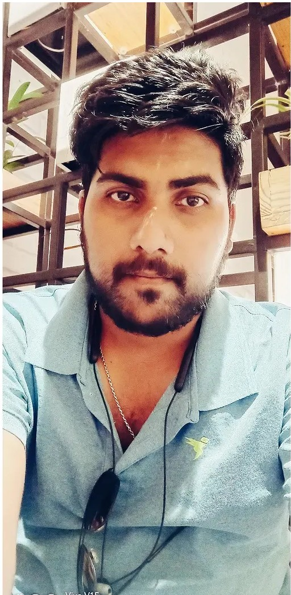
Not a perfect list. Just a very honest one.
For now, this is the song I want playing while you read the rest.
My dear Tarun,
If someone had told me around 2015 that the serious-looking Facebook friend I met would one day become my husband, I probably wouldn't have believed them.
We started with friendship. We talked almost every day. Then life happened. There were even two years when we didn't speak to each other.
And somehow, after almost ten years, our paths came together again — not through a love story, but through an arranged marriage.
I think the most beautiful thing about us is that before you became my husband, you were already my friend.
And in these five months, you've taught me something I didn't know I needed. You've taken my messy life and made it more planned, more comfortable, and so much easier.
You've taken responsibilities onto your shoulders and made me feel that I don't have to figure everything out alone.
Thank you for being hardworking. Thank you for being a family person. Thank you for caring. And thank you for finally letting me discover that you can actually crack jokes too. 😂❤️
Today you turn 30.
I don't know what the next 10, 20 or 50 years will look like. But I do know one thing...
I'm happy that I get to find out with you.
Happy 30th Birthday, my husband.
Love, Somiya ❤️
18 · 09 · 2026
for the birthday boy
Here's to 30 years of you,
10 years of knowing you,
5 months of being your wife,
and a lifetime still waiting to be written.
— Somiya ♥